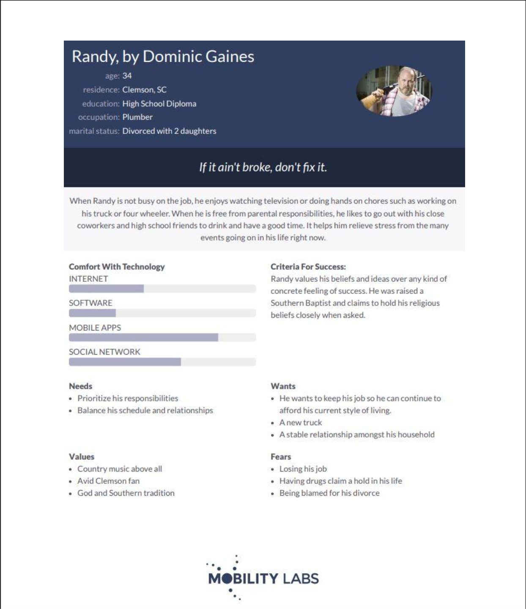
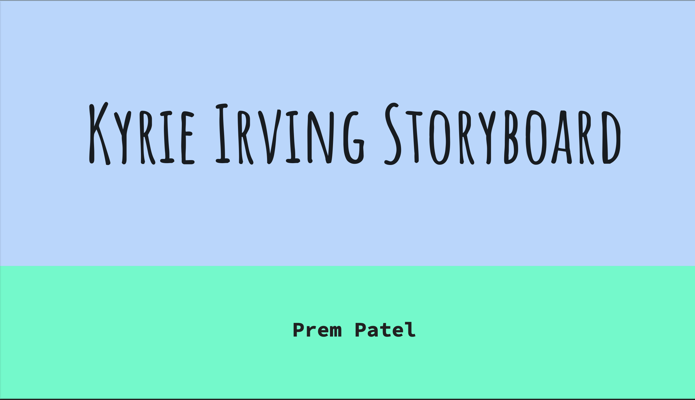
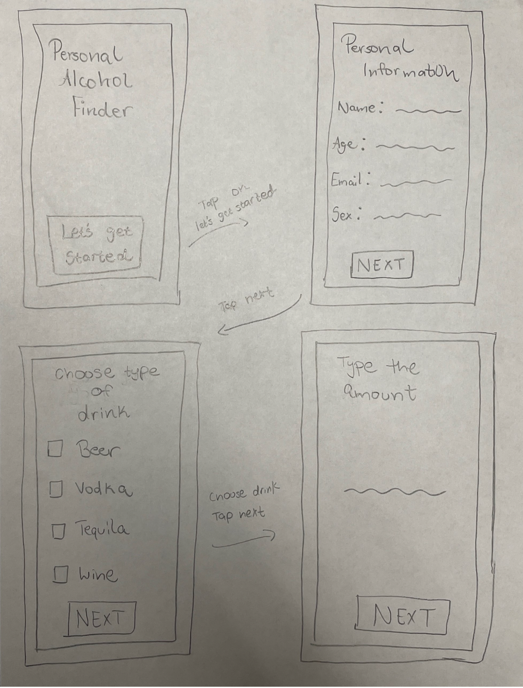
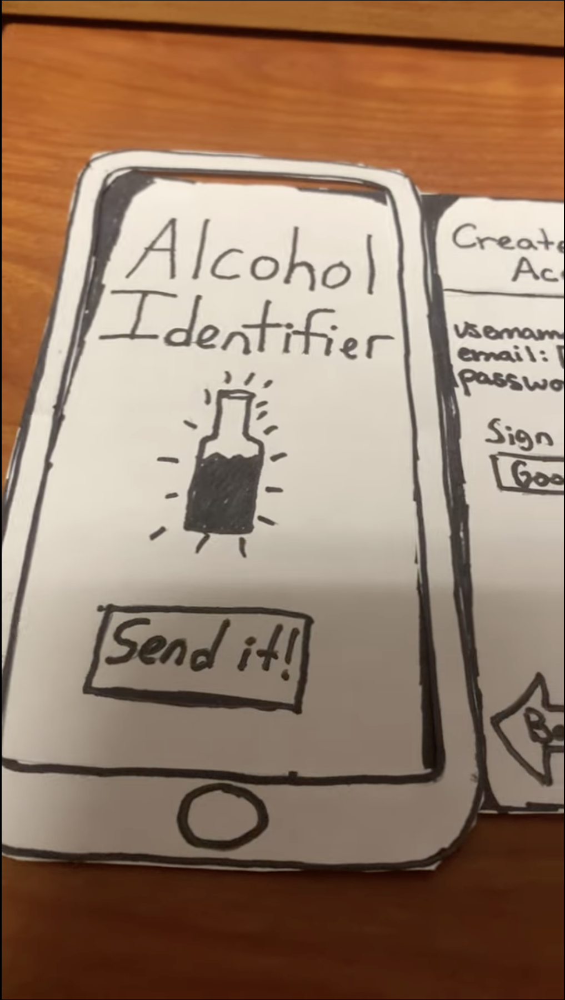

Problem Statement: Personal Alcohol Identifier

Our users are struggling with finding drinks to suit their tastes while developing healthy drinking habits. Most people may spend a significant amount of time trying different alcoholic beverages before they find a drink that attains both their ideal flavor and alcohol by volume. We seek to ease this process by matching one’s tastes with numerous options to choose from, while also making sure they are aware of how the drinks will affect them in both small and large numbers.
Affinity Diagram: Personal Alcohol Identifier

My group and I worked together to gather ideas about the personal alcohol identifier.
Personna: 5 Personnas for Alcohol Identifier
Some personnas for typical Alcohol Identifier users.
Storyboard: 5 Storyboards for Alcohol Identifier
Some of the storyboards from the users.
Sketches
Some rough ideas of what our application may look.
Paper Prototype
A paper walkthrough of what the application may look like.